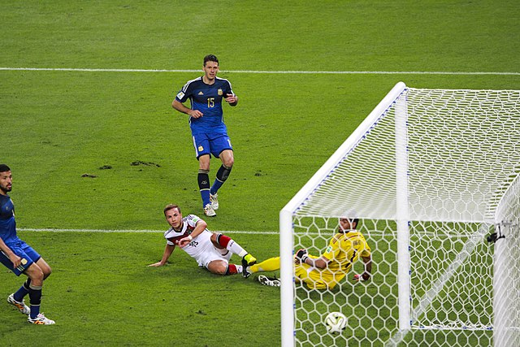

La final se jugó el 13 de julio de 2014 en el Estadio Maracaná de Río de Janeiro entre Alemania y Argentina. El marcador final fue 1-0 a favor de Alemania.
El único gol lo marcó Mario Götze en el minuto 113 del tiempo suplementario. Fue el cuarto título mundial para Alemania y la primera vez que una selección europea ganó un Mundial en América. El árbitro fue Nicola Rizzoli de Italia.